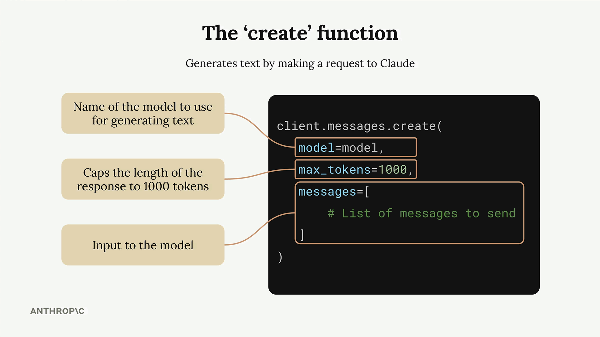

Первый запрос
Чему научитесь
Около 6 минут
К концу урока вы сможете:
- поставить пакеты и прочитать ключ из
.env; - вызвать
client.messages.createс тремя полями; - достать текст из
message.content[0].text.
Окружение
Видео и код урока.
Смотреть урок на Skilljar Making a requestСначала в ноутбуке ставят пакеты и прячут ключ, который скопировали на прошлом шаге.
%pip install anthropic python-dotenv
Рядом с ноутбуком создают файл .env:
ANTHROPIC_API_KEY="your-api-key-here"
Так ключ не лежит в коде и его сложнее случайно закоммитить. Файл .env добавляют в .gitignore.
from dotenv import load_dotenv load_dotenv() from anthropic import Anthropic client = Anthropic() model = "claude-sonnet-4-0"
Функция create
client.messages.create() требует три параметра:
model— имя модели;max_tokens— предохранитель длины, не цель. При 1000 генерация оборвётся на 1000 токенах, даже если мысль не кончилась. Добивать лимит модель не пытается;messages— история, которую вы отправляете.

Сообщения
Это реплики, как в чате. Два вида: user — то, что написал человек, assistant — то, что уже сгенерировал Claude. Каждый элемент — словарь с role и content.

Первый вызов
message = client.messages.create(
model=model,
max_tokens=1000,
messages=[
{
"role": "user",
"content": "What is quantum computing? Answer in one sentence"
}
]
)
В ответе много служебного. Текст урока достаёт так:
message.content[0].text
Пример фразы из урока: «Quantum computing is a type of computation that leverages quantum mechanics principles like superposition and entanglement…»
Дальше
Один вызов ещё не разговор: следующий урок показывает, что историю надо хранить самим.
Оригинал урока: Making a request.